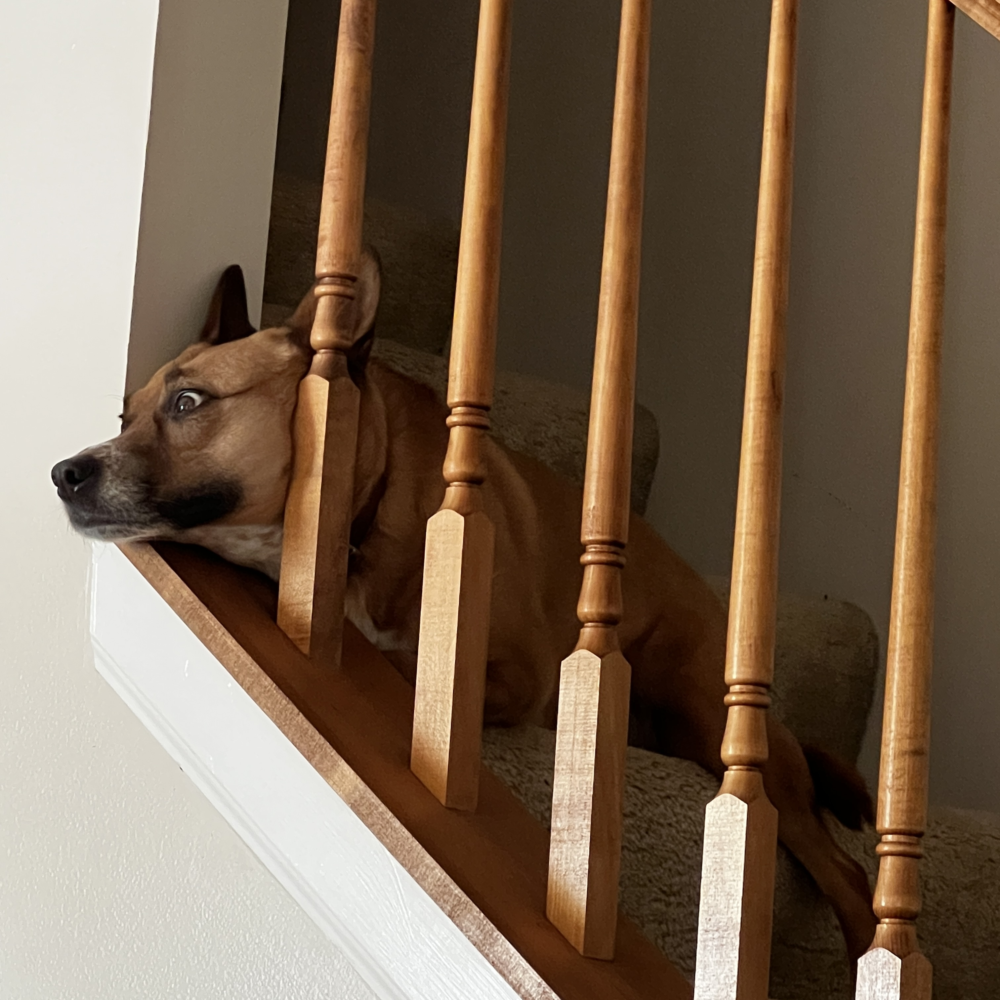

Dogs


Welcome to our webpage dedicated to the fascinating and heartwarming world of dogs! In this virtual journey, we'll accompany you through a delightful collection of images that showcase the diverse and endearing aspects of our canine companions.
Dogs, known as "man's best friend," have been loyal companions to humans for thousands of years. These incredible animals come in a variety of shapes, sizes, and breeds, each with its own unique charm.From the tiny Chihuahua to the majestic Great Dane, dogs have a special place in our hearts. As you explore this page, you'll encounter images of playful puppies, loyal working dogs, and devoted family pets. We'll also celebrate the intelligence of dogs and their ability to learn tricks and commands, not to mention their unconditional love and loyalty. Join us on this exploration of the wonderful world of dogs, and let these images warm your heart and remind you of the joy and companionship these furry friends bring into our lives. Dogs are more than just pets; they are an integral part of our families and our hearts.